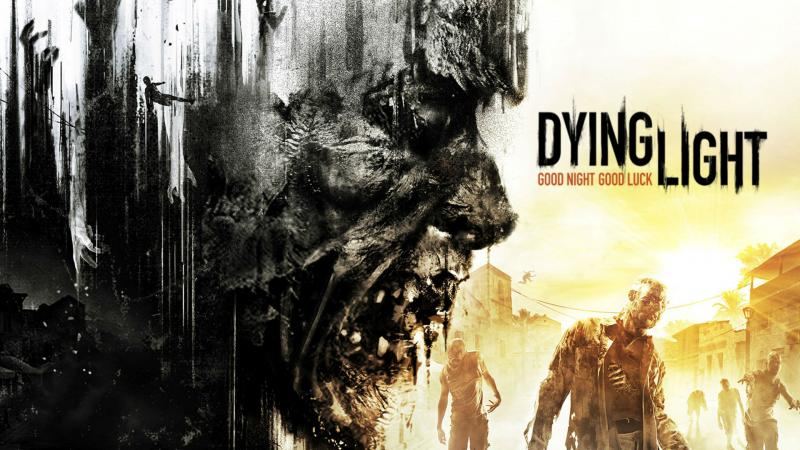
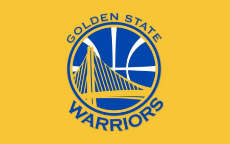

My daily life
Basketball give me energy
In my daily life, I am a more energetic person, and I enjoy spending time with friends and family very much. Due to the impact of COVID-19, I temporarily left the MSU campus and returned to China, so I couldn't meet my school friends. The feeling of being alone makes me very distressed, so I often go to the basketball court to meet some new friends.
Basketball is a very important part of my life. When I am happy or sad, basketball is my preferred method of exercise, and at the same time I can exercise my body. I can always meet many new friends on the court. We are different in age but we have the same passion for basketball.

My Hobby
I have many different hobbies, but my favorites are basketball and video games.
Video games
My favorite game is League of Legends and Dying Light. League of Legends is a very competitive multiplayer game. I really like the feeling of competition. I have a strong desire to win in my daily life, so I will take this game very seriously. In the game, I can cooperate with my teammates to achieve common goals. When we overcome difficulties and win, I will feel very satisfied. And Evanescent Light is a horror adventure game, which can bring me excitement that does not exist in reality. I need to avoid monsters to complete various challenges, which also makes me very excited.

Basketball
I also like watching basketball games very much. My favorite NBA team is the Golden State Warriors. Stephen Curry is my favorite star, whether I am in the dorm or at home, I will not miss every game. This is also my life has more fun and hope

My Story
My pets
I like pets very much. I have two dogs whose names are Shuaishuai and Danzi. They are a white bichon and a gray teddy. Now they have been with me for five years, and I miss them very much when I leave home to go to school